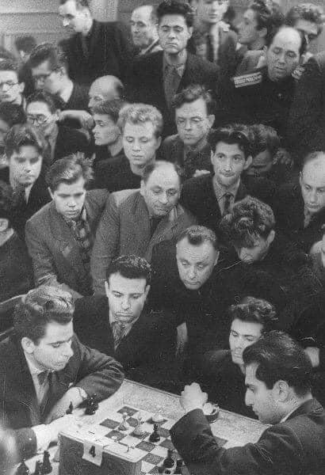

|

|

|

|
|
« On n’a jamais que l’âge auquel on a commencé à jouer aux échecs, car après on cesse de vieillir. » | ||
Je suis devenu entraîneur professionnel en 2004 et je continue depuis d’exercer ce métier avec la même envie de partager, de transmettre et d’inspirer.
J’ai créé cette page avec l’objectif de vous donner des éléments pour bien commencer aux échecs et vous repérer.
Des conseils et ressources pour vous entraîner, avoir une vue globale sur les différents secteurs du jeu et l’importance que je vous conseille d’y accorder.
« Il y a plus d’aventures sur un échiquier que sur toutes les mers du monde » disait Patrice de Mac-Mahon, et l’une de vos plus précieuses qualités sera la patience !
Et son alliée de choix : la curiosité.
Sur cette page, créée en 2021, je mets à votre disposition gracieusement de nombreux liens, des documents que j’ai construits au fil de mes années d’entraîneur et je vous fais partager mon expérience. J’espère que cela vous sera utile.
Tous vos retours sont les bienvenus.
Accès rapide :
Règles et premiers conseils
Quelques points de repère
Répartir son entraînement
La tactique
La stratégie
Les parties miniatures
Les finales
Les ouvertures
Les méthodes d’attaque sur le Roi
L’ordinateur
La psychologie
Quelques livres
Quelques chaînes
Mes autres projets actuels :
Championnats du monde
Vidéos Le conseil de la semaine
Par exemple avec les petites vidéos du club de St-Lô.
La vidéo Europe Échecs d’Andreea
Ce document PDF : Règles du jeu
Bien commencer (documents PDF du club EDL) :
Premiers conseils | Les parties nulles | La notation | Feuille de partie
Les modules Apprendre les échecs de Lichess
- Ouvertures (débuts de partie)
- Tactique (calcul, combinaisons)
- Stratégie (organisation, placement, planification)
- Finales (fins de parties)
Phases de progression d’un joueur :
1) Phase matérielle (être concentré sur le matériel, le déplacement des pièces et les captures)
2) Phase spatiale (prendre conscience des cases, du contrôle des cases, d’éléments géométriques)
3) Phase temporelle (prendre conscience des gains/pertes de temps, quand faire quoi, quand agir vite ou non)
« Les échecs ont trois composantes : le temps, l’espace et le matériel en dernier. »
Mikhail Tal, 8e champion du monde
Critères d’évaluation d’une position (par ordre d’importance) :
1) Sécurité du Roi (le mat met fin à la partie)
2) Matériel (un surnombre aide à gagner)
3) Activité des pièces (quand les joueurs font assez attention aux critères 1 et 2, cela sera souvent décisif)
4) Structure de pions (et ses conséquences, en particulier les pions faibles)
Recommandations importantes pour progresser :
- Jouez, jouez et jouez
- Analysez vos parties (seul, sans l’ordinateur puis avec, et si possible avec un entraîneur ou un joueur expérimenté)
- Multipliez les exercices de calcul (tactiques principalement, cela peut aussi être dans des finales et des études)
- Regardez des parties (en direct, commentées, etc.)
Mon document Comment analyser ses parties
Conseils pour jouer sur internet :
- préférez jouer avec un incrément, qui donne la prime au jeu sur la pendule
- utilisez une cadence d’au moins 10 minutes, si possible 15 voire plus. Il est difficile de construire une vraie partie d’échecs avec moins de temps
- il est bon de jouer beaucoup mais essayez de privilégier la qualité sur la quantité : mieux vaut moins de parties mais mieux soignées et avec des cadences plus longues, que vous analyserez pour en retirer des enseignements
Mon document Jouer sur Internet
Exemple de répartition d’entraînement pour un joueur qui débute :
- Ouvertures 10 %
- Tactique 50 %
- Stratégie 25 %
- Finales 15 %
Remarques :
- on peut mal commencer une partie mais se rétablir en milieu de partie ou fin de partie, tandis que si on se trompe dans la finale, il y a nettement plus de chances que cela nous coûte la partie. C’est pourquoi je pense que vous devriez dédier plus de temps aux finales. L’avantage est que ce que vous apprenez en finales ne changera pas dans le temps et vous servira toujours, ce qui vous permettra ensuite de dédier plus de temps aux autres secteurs, notamment la stratégie et les ouvertures.
« Un joueur peut parfois s’offrir le luxe de commettre une imprécision, voire une erreur pendant l’ouverture ou le milieu de jeu, sans nécessairement perdre la position. Dans une finale… une erreur peut être décisive et les secondes chances se présentent rarement. »
Paul Keres
- il est possible de travailler le secteur des ouvertures en faisant un lien avec le milieu de jeu, en étudiant les plans correspondants et des parties de tournoi. Dans ce cas il y a un travail à la fois d’ouvertures et de stratégie.
- notez que quand vous analysez vos parties, vous travaillez potentiellement sur les 4 secteurs du jeu.
Exemple de répartition d’entraînement pour un joueur avec 2 ans d’échecs :
- Ouvertures 20%
- Tactique 30%
- Stratégie 30%
- Finales 20%
« Pour me battre, il faut me battre trois fois : une fois dans l’ouverture, une fois dans le milieu de jeu, et une fois en finale. »
Alexandre Alekhine, 4e champion du monde
Principaux tableaux de mat (les plus fréquents en premiers) :
- Mat du couloir
- Baiser de la mort
- Mat de l’escalier
- Mat à l’étouffée
- Mat arabe
- Mat d’Anastasie
- Mat du Guéridon
- Mat de Lolli
- Mat de Greco
- Mat du crochet
- Mat de Blackburne
- Mat de Boden
- Mat de Damiano
- Mat des épaulettes
- Mat de Pillsbury
- Mat de Morphy
- Mat de l’opéra
Dans l’ouverture :
- Mat du Lion
- Mat du Berger
- Mat de Legal
Mon document PDF 24 tableaux de mat
La page de ChessTempo Thèmes Tactiques et tableaux de mat
Les Modules d’entraînement de Lichess
« Pour moi, les échecs ne sont pas un jeu mais un art. »
Alexandre Alekhine, 4e champion du monde
Principaux thèmes tactiques (les plus fréquents en premiers) :
- Double attaque / fourchette
- Clouage
- Attaque à la découverte
- Eliminer le défenseur
- Coup intermédiaire
- Enfilade
- Pièce coincée
- Déviation
- Attraction
- Interception
- Dégagement
- Obstruction
- Rayons-X
- Zugzwang
Remarque : le zugzwang est un thème particulier que l’on pourrait placer ailleurs.
La page de ChessTempo Thèmes Tactiques
Vous pouvez travailler la tactique en ligne, par exemple sur le site ChessTempo, spécialisé pour cela, ainsi que sur de nombreux autres sites, sur des applications et avec des livres.
Les Modules d’entraînement de Lichess
Le site ChessPuzzle.net
Ma playlist de 3 vidéos de déclinaisons tactiques
La méthode par étapes
Un moyen privilégié de travailler, que je recommande, c’est les livrets à 5€ de la Méthode par étapes élaborée par des entraîneurs hollandais il y a une vingtaine d’années, très utilisée partout dans le monde, et dont la qualité pédagogique est exceptionnelle. Chaque livret de 50 pages contient plusieurs centaines d’exercices, principalement tactiques.
Si vous êtes animateur / entraîneur, je vous recommande fortement ces livrets pour vos élèves et les livrets de l’entraîneur pour vous-même.
« La tactique, c’est ce que vous faites quand il y a quelque chose à faire ; la stratégie, c’est ce que vous faites quand il n’y a rien à faire. »
Xavier Tartacover
- la sécurité du Roi
- l’activité des pièces (incluant bon/mauvais Fou)
- les échanges
- l’espace
- la case forte/faible
- la colonne ouverte
- l’avance de développement
- les roques opposés
- l’évaluation d’une position
- le centre de pions
- l’ouverture des lignes, le levier
- la réaction centrale
- l’initiative
- la 7ème rangée (vidéo)
- la centralisation
- la prophylaxie
- les majorités de pions
- l’avant-poste (et ses différentes définitions)
- la paire de Fous
- le pion arriéré
- les pions faibles
- la faiblesse sur une couleur
- les attaques de Fous de couleurs opposées (vidéo)
- le principe des deux faiblesses
- le pion isolé central
- l’attaque de minorité
- le pion passé (utilisation et blocage)
La stratégie est tout autant au coeur du jeu que la tactique.
La page de ChessTempo Thèmes Stratégiques
Il existe de nombreux livres réputés sur la stratégie. En voici deux : Mûrir son style aux échecs de Silman (pas facile à trouver et (donc) plus cher que la moyenne) et Strategy for clubs players de Grooten.
Je vous conseille également les deux livres Principes fondamentaux de la stratégie de mon collègue Marc Quenehen.
J’en profite pour recommander un très bon livre qui traite aussi bien de la tactique, de la stratégie et des finales : Une boussole sur l’échiquier de Xavier Parmentier.
De nombreux thèmes stratégiques ont été traités en vidéo dans les Masterclass de la FFE qui sont en accès libre, avec documents associés (mémo, exercices, base PGN).
39 masterclass, près de 100 heures de vidéos pédagogiques : L’indexation par thèmes
Et dans ma playlist vidéos de parties d’amateurs
Les étudier est un moyen intéressant de travailler les thèmes Avance de développement, Sécurité du Roi, Ouverture des lignes, en même temps que des motifs tactiques, tout en voyant différentes ouvertures.
Mon document 32 miniatures | Ma playlist vidéos de miniatures
« 90% des variantes d’un livre d’ouverture n’ont pas de réelle utilité. En effet, soit elles contiennent des erreurs, soit elles sont basées sur des hypothèses fallacieuses. Oubliez donc simplement les ouvertures et consacrez votre temps à l’étude des finales. »
José Raúl Capablanca, 3e champion du monde
L’étape nº1 est de savoir mater un Roi seul avec des pièces lourdes (Dame et Tour):
- mat de l’escalier (avec Dame et Tour et avec deux Tours) | Vidéo
- mat avec la Dame (Roi et Dame contre Roi) | Vidéo
- mat avec la Tour (Roi et Tour contre Roi)
L’étape nº2 consiste à assimiler les positions théoriques fondamentales.
Je vous conseille de commencer par la finale Roi et pion contre Roi. (en vidéo ici)
Puis par des finales de pions en général (sans aller trop loin dans la difficulté).
Les finales de Tours les plus élémentaires.
La finale Dame contre pion en 7ème rangée. (en vidéos ici ou là)
Quelques positions de finales de Fous et de Cavaliers.
Les nulles théoriques fondamentales.
L’étape nº3 est d’assimiler les grands principes de finales :
- l’activité du Roi
- la Tour en 7ème rangée
- en avance matériel on échange les pièces mais pas les pions
- le pion passé est fait pour être poussé
- le pion candidat en avant
- la Tour derrière le pion passé
- les différents types de pions passés
- ne pas se presser
- les forteresses
Rejouez les finales de grands joueurs et analysez vos propres finales.
Je vous conseille d’acquérir au moins un livre de finales. Parmi les réputés : La méthode Silman pour maîtriser les finales aux échecs (Silman), Entraînement aux finales (Bernd Rosen). Un peu plus compliqués : Fundamental Chess Ending (Muller et Lamprecht) et Les 100 finales qu’il faut connaître (de la Villa).
Les Modules de finales de Lichess
Le Module de finales de Chesstempo (2 gratuites par jour)
Ma playlist vidéos de finales
De nombreuses finales ont été traitées en vidéo dans les Masterclass de la FFE qui sont en accès libre, avec documents associés (mémo, exercices, base PGN).
L’index par thèmes
Il est normal de se poser ces questions-là et la première est même totalement légitime. Mais je dois ici commencer par deux avertissements :
1) Ne vous fixez pas comme objectif de faire tomber votre adversaire dans des pièges. A court terme cela vous fera gagner des parties, surtout contre des joueurs peu expérimentés, mais à long terme cela vous fait perdre du temps et peut vous éloigner d’une approche qui vous serait plus profitable à moyen et long terme, notamment au niveau de votre compréhension du jeu.
Cela ne veut pas dire que vous ne pouvez pas retenir un piège ici ou là, en passant, mais ne jouez pas pour les placer à tout prix, votre objectif doit avant tout être de jouer des bons coups. Si un bon coup tend un piège, pas de souci, mais s’il faut jouer un coup douteux ou mauvais pour cela, c’est dommageable. Un bon exemple est le mat du berger. Si votre adversaire ne le connaît pas il peut se faire mater, mais s’il le connaît vous vous retrouvez en mauvaise position avec votre Dame sortie.
J’irais même plus loin : même si votre piège fonctionne et vous fait gagner la partie dès le début, je trouve que c’est dommage : qu’avez-vous appris de cette partie ? Probablement rien. Comment allez-vous progresser dans ces conditions ?
« Votre seul travail dans les ouvertures est d’obtenir un milieu de partie jouable. »
Lajos Portish
Le grand entraîneur Mark Dvoretsky écrivait qu’il entendait souvent des élèves qui lui disaient qu’ils travailleront le reste quand ils auront fini leur répertoire d’ouvertures. Il leur répondait qu’on n’a jamais fini son répertoire !
Méfiez-vous, on peut vraiment se noyer dans ce secteur, travaillez-le avec parcimonie.
Conseils :
- essayez de travailler non pas seulement les coups d’ouvertures mais surtout les idées de ces coups
- essayez de travailler vos ouvertures en fonction de leur structure de pions, c’est une approche qui vous fera travailler la stratégie, les plans, et qui vous servira potentiellement dans d’autres ouvertures (un excellent livre pour cela : Les structures de pions aux échecs de Flores Rios)
- regardez des parties de tournois ayant été jouées avec votre ouverture (par exemple sur le site ChessTempo rubrique Base de données). A ce sujet, je vous conseille de regarder les toutes premières parties jouées dans l’histoire avec votre ouverture, souvent des parties de la fin du 19e siècle ou début du 20e. Ces parties sont plus faciles à comprendre que les parties plus modernes. Cherchez également des parties de champions des différentes époques, et éventuellement des spécialistes (joueurs qui l’ont souvent utilisée).
- cherchez un ou deux bons livres sur vos ouvertures principales, c’est sûrement encore à ce jour la meilleure façon de bien travailler une ouverture. Pour les autres vous pouvez chercher des vidéos qui expliquent (demandez-vous juste bien qui fait la vidéo, est-ce au moins un entraîneur expérimenté ?).
À propos de cacher ses ouvertures
C’est quelque chose que j’entends énormément. Je comprends tout à fait le désir de préserver quelque chose qu’on a passé du temps à travailler mais c’est au pire une illusion, et au mieux une mauvaise approche. J’en ai souvent parlé avec d’autres entraîneurs.
Croyez-vous que la meilleure façon d’améliorer votre répertoire / votre ouverture soit de la laisser dans un placard ou de la tester au grand jour ? Bien sûr en la testant, et parfois en se prenant des coups auxquels on ne savait pas répondre. C’est en exposant vos ouvertures que vous les renforcerez, pas le contraire !
Je vous recommande même l’approche opposée : si vous prévoyez un match d’entraînement avec un joueur, donnez-lui votre ouverture et dites-lui de se préparer contre ! Ce sera pour vous (et pour lui) beaucoup plus intéressant et instructif que s’il ne savait pas quoi jouer dessus. Chacun améliore ainsi son répertoire, ses connaissances et son expérience.
(tellement plus qu’en jouant 1.g3 pour cacher son ouverture incroyable ;-) )
Construire son répertoire
La construction de son répertoire est source de nombreuses questions : comment mémoriser, comment choisir ses ouvertures, devrais-je jouer plutôt des grandes variantes ou des sous-variantes, comment travailler une ouverture, devrais-je apprendre un répertoire ou plusieurs, quand aurai-je terminé mon répertoire, etc.
Voici quelques sources pouvant vous aider à y répondre :
- mon PDF de 4 pages Comment construire son répertoire
- le chapitre Construire son répertoire de la masterclass FFE avec le MI Xavier Bédouin
- une vidéo de JPG Chess "Comment faire son répertoire"
Deux livres (parmi d’autres !) qui me viennent en tête à ce sujet : L’art de l’attaque de Vukovic et L’école des échecs le tome 2 de Kotov.
Voici quelques méthodes :
- attaquer le Roi au centre (case f7, diagonale h5-e8 / a4-e8, colonnes centrales)
- sacrifice Fxh7+ (Calabrais ou cadeau grec)
- double sacrifice de Fous (Lasker-Bauer, Nimzowitsch-Tarrasch, etc.)
- attaque sur h7
- attaque sur g7
- ouverture des lignes (colonnes, diagonales, levier de pion)
- l’assaut de pions
- la Tour qui coulisse horizontalement
- attaquer un fianchetto
- attaquer un grand roque
- l’extraction du Roi
- les conditions pour attaquer / sacrifier
« Mais qu’importe ce que vous direz et ce que je dirai, une machine pouvant jouer aux échecs avec autrui est l’une des plus belles merveilles de notre 20e siècle ! »
David Bronstein, vice-champion du monde 1951
- Pour progresser aux échecs, votre cerveau doit s’habituer à reconnaître les bons et les mauvais schémas de lui-même, il doit s’habituer à produire les raisonnements échiquéens, cela demande du temps et de l’autonomie : soit tout le contraire de ce qu’on obtient quand on regarde ce que propose l’ordinateur puisqu’il donne la « réponse » 1) instantanément et 2) c’est lui qui travaille, pas notre cerveau.
D’ailleurs au passage je rappelle que Magnus Carlsen, le champion du monde actuel, a très peu utilisé l’ordinateur au cours de sa formation échiquéenne et on pourrait dire la même chose de la majorité des super GM actuels.
Quelques conseils :
- méfiez-vous de ce qu’il dit dans l’ouverture, quand vous le pouvez utilisez plutôt les bibliothèques d’ouvertures, qui contiennent les coups joués par des humains dans les tournois (un coup qui a été joué des milliers de fois par des très bons joueurs est 10 fois plus digne de votre confiance)
- méfiez-vous de son évaluation, qui de nos jours peuvent monter très haut dans des positions encore peu claires pour un oeil humain, et qui peuvent laisser croire que c’est "facilement" gagnant
- méfiez-vous de certaines évaluations en finales, étant donné qu’elle n’intègre quasiment pas les positions de nulle théoriques ni la notion de forteresse (utilisez les tables de finales si possible)
- méfiez-vous des coups proposés par l’ordinateur, lui calcule des millions de coups par seconde et peut se permettre des choses que des humains ne devraient pas faire. Faites-lui surtout confiance quand il s’agit de coups tactiques clairs (attaque de mat, gain de matériel) et utilisez votre esprit critique en relation avec les principes échiquéens
- désactivez l’ordinateur pour analyser et habituer votre cerveau à réfléchir par lui-même, puis comparez le fruit de vos analyses avec ce que propose l’ordinateur
Bonus :
- n’oublions pas qu’en 2018 AlphaZero a battu Stockfish 155 victoires à 6 dans un match en 1000 parties
- vidéo JPG Chess : 10 modules UCI
- allez voir le projet MaiaChess qui cherche à imiter le jeu humain
- une proposition de ChessMI avec le logiciel gratuit LucasChess
Ma vidéo qui traite de ces questions :
« Les Échecs mettent en conflit, non pas deux intelligences, mais deux volontés. »
Emanuel Lasker, 2e champion du monde
« Les Échecs sont 30 à 40% psychologiques. Cette dimension disparaît quand on affronte un ordinateur. »
Judith Polgar, plus forte joueuse de l’histoire
Chaîne Mentor your chess du MI et entraîneur Alain Genzling
Articles des GMI et entraîneurs du site ChessMood (anglais)
Chaîne du GMI et entraîneur RB Ramesh (anglais)
Attention à la maladie du joueur d’échecs : acheter plein de livres et ne pas les lire :)
|
Coups de coeur La Méthode par étapes Une boussole sur l’échiquier (Xavier Parmentier) Les sept péchés capitaux aux échecs (Rowson) La collection Vive les échecs de Philippe Pierlot Joys of chess (Christian Hesse) Le nouveau guide des échecs (Giffard/Biénabe) |
Finales La méthode Silman pour maîtriser les finales aux échecs Entraînement aux finales (Bernd Rosen) Fundamental Chess Ending (Muller et Lamprecht) Les 100 finales qu’il faut connaître (de la Villa) La stratégie dans les finales (Cherechevski) Le manuel des finales (Dvoretsky) |
Classiques Des échecs à l’infini (Karpov/Guik) L’art du combat, Zurich 1953 (Bronstein) Combinational motifs (Blokh) Mes grands prédécesseurs (1-2-3-4-5) (Kasparov) L’art de jouer les pions (Hans Kmoch) The art of attack (Vukovic) |
|
Stratégie Mûrir son style aux échecs (Silman) Strategy for clubs players (Grooten) Principes fondamentaux de la stratégie (Marc Quenehen) Les secrets de la stratégie moderne aux échecs (Watson) |
Ouvertures Maîtriser les ouvertures (1-2) (Watson) Comment construire son répertoire d’ouvertures (Steve Giddins) Jouez 1.e4 (1-2) (Shaw) Les collections Move by move, Starting out Expert : les GrandMaster repertoire |
Divers Build up your chess (1-2-3) (Yusupov) Exercices de stratégie (Bricard) 50 idées stratégiques (Terekhin) Les secrets de l’initiative (Xavier Parmentier) S’entraîner aux échecs Jesper Hall |
Est souvent fortement conseillé aussi : Comment battre papa aux échecs (Chandler).
Il existe évidemment énormément de bons livres et je ne peux tous les citer.
Ecrivez-moi si vous pensez qu’un excellent livre que j’ai oublié mérite de figurer.
J’en avais mis d’autres sur cette page.
Un éditeur de livres d’échecs en français : Olibris
Voici quelques chaînes perso qui valent le détour :
Kévin Bordi : YouTube / Twitch
Apprendre les échecs en 24h : YouTube / Twitch
Gilles Miralles : YouTube
Marc Quenehen : YouTube
Vincent Denis / Chess trainer 2000 : YouTube
Diagonale TV / Iminéo : Site / YouTube
Igor Nataf : YouTube / Twitch
Andreea Navrotescu : YouTube / Twitch
JPG Chess :YouTube
64 cases : YouTube
Hélène Ruhlmann : YouTube
Pierre Calendini : Twitch / YouTube
Luc Pitallier : YouTube
Echecs et Maths Faciles : YouTube
ChessMI : YouTube
Sylvain Ravot : YouTube
Ecrivez-moi si vous pensez qu’une excellente chaîne que j’ai oubliée mérite de figurer.
En anglais (parmi d’autres !) :
ChessMood avec plusieurs GM arméniens
Chessbase India avec Sagar Shah
Saint Louis Chess Club
Daniel Naroditsky
Quelques sites offrant des ressources (en partie payantes) :
Europe Échecs
Chess.com
Chess24.com
Chessgames
Chesstempo
Chessable
Et bien sûr, pour structurer tout ça, n’hésitez pas à prendre des cours avec un entraîneur expérimenté ;-)
Auteur de cette page : Sylvain Ravot
| Commander des masterclass |  |
|